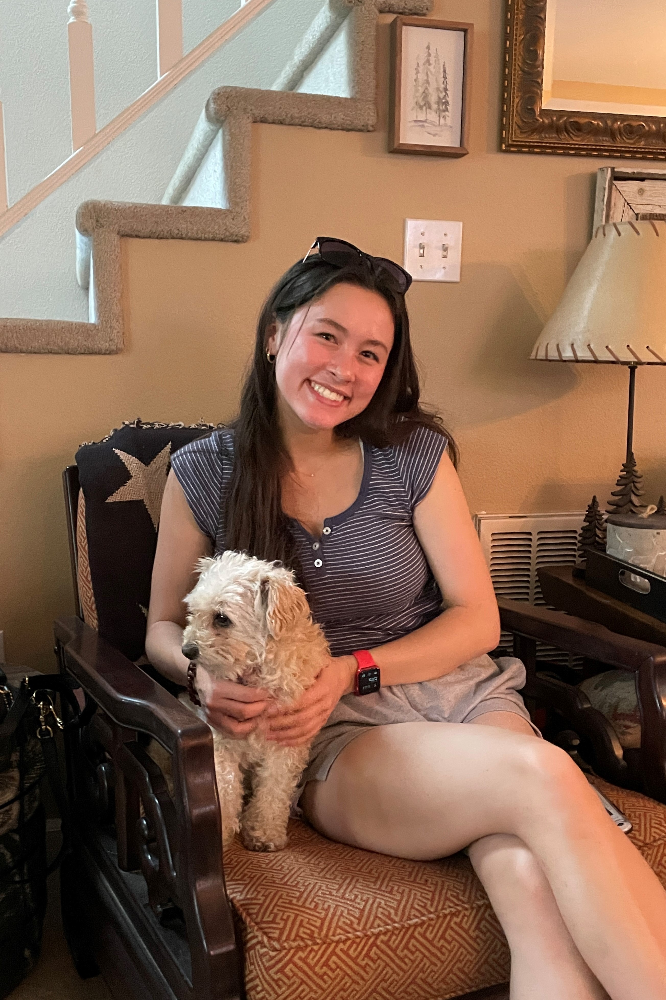

Sarah Suen
Cognitive Science | 1st Year
Hi! I'm Sarah, a Bay Area native who loves ice cream. I also love listening to music, crocheting, dance, designing, and anything that utilizes creativity.
Favorite Places to Eat in Berkeley:
- Yogurt Park
- Sweetheart Cafe
- Noodles Fresh

Wordle!
- Something I learned from this article is that I should study the design aspects of apps. By focusing on hierarchy, content, intent, and audience, it would be effective to look from a design perspective, rather than just a user's perspective.
- I enjoyed looking at the Spotify app observations because I use the app every day, but haven't really thought to observe it from a design perspective. I find it interesting that there seems to be a purpose for everything, making the app more intuitive and impactful.
- Quote: "By routinely analyzing other apps, you’ll develop your product thinking and get better at designing apps yourself."
- On a scale from 1 to 10, I would rate my experience reading this article an 8.